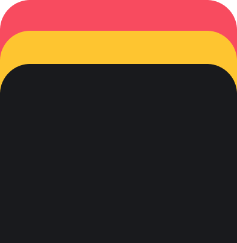

<ion-app>
  <ion-content>
    <div class="top-content-area"></div>

    <div class="bottom-visual-container">
      

      <ion-card class="bottom-card">
        <ion-card-content class="ion-text-center">
          <h1 class="ion-text-warning">Sé un explorador gastronómico</h1>
          <p>Explora los mejores puestos de comida típica y vive una experiencia auténtica.</p>
        </ion-card-content>
      </ion-card>
    </div>
  </ion-content>
</ion-app>